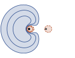
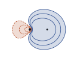
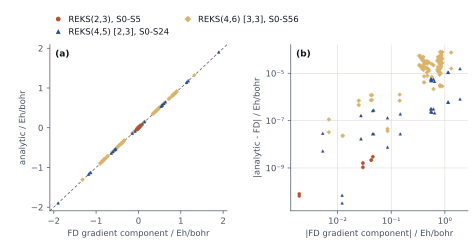

A geminal of width w holds two electrons in w orbitals (REKS_GEMINAL_WIDTHS). Example: BH. The boron lone pair correlates with both π orbitals, REKS(2,3); the B–H bond pair is added in REKS(4,5) and REKS(4,6). Procedure as in §3: seed → slots → start → check. The orbital part of this page runs HF with reks_fon_interp_delta 1010: then f(x) = √x (Coupling Δ and factor f) and E(PPS1) is the energy of a product of geminals, which is checked exactly (Check the solution).
The PPS geminal over the slots p1, …, pw of one geminal:
For w = 2 this is Φ0 of Geminals. The first slot of each geminal carries the + sign; in a seed it holds a doubly occupied orbital. Geminals of scheme 0, as Pairing scheme 0 prints them in Post-Iterations:
reks |
reks_geminal_widths |
Geminals of scheme 0 |
|---|---|---|
[2, 3] |
[3] |
(a,b,c) |
[2, 4] |
[4] |
(a,b,c,d) |
[4, 5] |
[2, 3] |
(a,c,d) & (b,e) |
[4, 6] |
[3, 3] |
(a,d,f) & (b,c,e) |
Token k of GUESS_ACTIVE_WINDOW fills slot k (Start REKS); the window lists the orbitals in slot order a, b, c, …, not geminal by geminal.
BH, r = 1.2324 Å, cc-pVDZ. RHF seed (wide_bh_23.py rhf, Worked inputs): 1A B 1s, 2A σ (−0.6469), 3A σ, HOMO (−0.3449), 4A and 5A π, LUMO and LUMO+1 (0.0587), 6A σ*, LUMO+2 (0.2563). The core holds 1A and 2A; the default window (HOMO, LUMO, LUMO+1) is the lone pair and both π.
psi4.set_options({"basis": "cc-pvdz", "scf_type": "pk",
"reference": "reks", "reks": [2, 3], "reks_geminal_widths": [3],
"sa_reks_configs": ["PPS1"], "si_reks_configs": [[]],
"reks_fon_interp_delta": 1e10,
"e_convergence": 1e-10, "d_convergence": 1e-8})
e, wfn = psi4.energy("hf", return_wfn=True, restart_file="wide_bh_rhf.wfn.npy")| Run | Slots | E(PPS1) / Eh | Iterations | na / nb / nc |
|---|---|---|---|---|
| REKS(2,2) | HOMO, LUMO (no window) | −25.1469095837 | 14 | 1.903418 / 0.096582 |
| REKS(2,3) | HOMO, LUMO, LUMO+1 (no window) | −25.1640880605 | 17 | 1.853892 / 0.073054 / 0.073054 |
| REKS(2,3) | window HOMO, LUMO, LUMO+2 | −25.1492681987 | 88 | 1.903045 / 0.093332 / 0.003622 |
| CASSCF(2,3), same core | — | −25.1640880604 | — | — |
REKS(2,2), then REKS(2,3):
Pairing scheme 0: (a,b) = (4A,2A)
4A -0.409242 (a) n_a = 1.903418
2A -0.613175 (b) n_b = 0.096582Pairing scheme 0: (a,b,c) = (5A,3A,2A)
5A -0.430420 (a) n_a = 1.853892
3A -0.641561 (b) n_b = 0.073054
2A -0.641561 (c) n_c = 0.073054The window with LUMO+2:
GUESS READ: active window ['HOMO', 'LUMO', 'LUMO+2'] -> MO columns [2, 3, 4] (swaps [(4, 5)])
[...]
Pairing scheme 0: (a,b,c) = (5A,3A,2A)
5A -0.409420 (a) n_a = 1.903045
3A -0.612360 (b) n_b = 0.093332
2A -1.109615 (c) n_c = 0.003622REKS(4,5) with widths [2, 3] puts the lone pair and both π in (a,c,d), the B–H bond and σ* in (b,e). Straight from the RHF seed the SCF does not reach it: slot a takes the RHF MO 2A, slot b the RHF MO 3A, and after MAXITER (100) E lies above REKS(4,4) (the stage sets "fail_on_maxiter": False to finish; the kA labels below number the orbitals of the run by ε):
@REKS iter 100: -25.14326318602926 0.00000e+00 2.88730e-05 ORB-GVB-DIIS
PsiException: Could not converge SCF iterations in 100 iterations.
Energy and/or wave function did not converge, but proceeding anyway.
[...]
Pairing scheme 0: (a,c,d) & (b,e) = (5A,3A,2A) & (6A,4A)
5A -0.663019 (a) n_a = 1.978974
6A -0.349407 (b) n_b = 1.993823
3A -1.354157 (c) n_c = 0.010513
2A -1.354160 (d) n_d = 0.010513
4A -0.956531 (e) n_e = 0.006177Each wider space reads the orbitals of the previous one (Restart mechanism). A file written by REKS stores the core, then the active orbitals in slot order a, b, …, then the virtuals; the kA labels of Post-Iterations number the orbitals by ε and are not columns. Integer tokens of the window are 0-based columns of the read file; python wide_bh_45.py columns <file> prints the Mulliken population of columns 0–7 on B and H and their share of px, py functions (π). The REKS(2,3) file, then the REKS(4,5) file:
column 0: B 1.00 H 0.00 pi 0.00
column 1: B 0.43 H 0.57 pi 0.00
column 2: B 1.03 H -0.03 pi 0.00
column 3: B 1.00 H 0.00 pi 0.95
column 4: B 1.00 H 0.00 pi 0.95
column 5: B 0.29 H 0.71 pi 0.00
column 6: B 0.97 H 0.03 pi 0.00
column 7: B 1.00 H 0.00 pi 0.99column 0: B 1.00 H 0.00 pi 0.00
column 1: B 1.04 H -0.04 pi 0.00
column 2: B 0.43 H 0.57 pi 0.00
column 3: B 1.00 H 0.00 pi 0.95
column 4: B 1.00 H 0.00 pi 0.95
column 5: B 0.47 H 0.53 pi 0.00
column 6: B 1.03 H -0.03 pi 0.00
column 7: B 1.00 H -0.00 pi 0.99| Run | Seed | Columns of the seed | Window | E(PPS1) / Eh | Iterations |
|---|---|---|---|---|---|
| REKS(4,4) | RHF | — | default | −25.1540332485 | 24 |
| REKS(4,5) [2,3] | RHF | — | default | −25.1432631860, not converged | 100 |
| REKS(2,3) [3] | RHF | — | default | −25.1640880605 | 17 |
| REKS(4,5) [2,3] | REKS(2,3) | 1 bond, 2 lone pair, 3 4 π, 5 σ* | [2, 1, 3, 4, 5] |
−25.1775062082 | 25 |
| REKS(4,6) [3,3] | REKS(4,5) | 1 lone pair, 2 bond, 3 4 π, 5 σ*, 6 σ | [1, 2, 5, 3, 6, 4] |
−25.1828261871 | 42 |
B–H bond: H 0.57; lone pair: on B, π 0.00; π: 0.95; σ* (column 5): H 0.71 and 0.53; column 6: on B, π 0.00. The report prints the swaps that bring the columns into the slots. A file of another active space restores the orbitals only: REKS READ: active space mismatch (2,3) -> (4,5); FON not restored, falling back to default.
GUESS READ: active window [2, 1, 3, 4, 5] -> MO columns [1, 2, 3, 4, 5] (swaps [(1, 2)])
[...]
Pairing scheme 0: (a,c,d) & (b,e) = (6A,4A,3A) & (5A,2A)
6A -0.439228 (a) n_a = 1.859782
5A -0.591954 (b) n_b = 1.983272
4A -0.658725 (c) n_c = 0.070109
3A -0.658725 (d) n_d = 0.070109
2A -1.394101 (e) n_e = 0.016728GUESS READ: active window [1, 2, 5, 3, 6, 4] -> MO columns [1, 2, 3, 4, 5, 6] (swaps [(3, 5), (4, 5), (5, 6)])
[...]
Pairing scheme 0: (a,d,f) & (b,c,e) = (7A,5A,4A) & (6A,3A,2A)
7A -0.443634 (a) n_a = 1.860529
6A -0.595291 (b) n_b = 1.978075
3A -1.378234 (c) n_c = 0.016410
5A -0.664304 (d) n_d = 0.069735
2A -1.655411 (e) n_e = 0.005515
4A -0.664304 (f) n_f = 0.069735
a lone pair · n 1.860529
b B–H bond · n 1.978075Post-Iterations; H is the Hamiltonian of the active space with the core frozen. Minimizing ⟨Ψ|H|Ψ⟩ over the coefficients at fixed orbitals lowers nothing:wide_bh_23_reks23 (a,b,c) E(PPS1) -25.1640880605 E(product) - E(PPS1) -5.7e-12 min over coefficients -5.8e-12 CASCI -25.1640880605
wide_bh_45_reks44 (a,d) & (b,c) E(PPS1) -25.1540332485 E(product) - E(PPS1) -4.3e-12 min over coefficients -5.7e-12 CASCI -25.1543465599
wide_bh_45_reks45 (a,c,d) & (b,e) E(PPS1) -25.1775062082 E(product) - E(PPS1) -9.7e-12 min over coefficients -1.0e-11 CASCI -25.1786807010
wide_bh_45_reks46 (a,d,f) & (b,c,e) E(PPS1) -25.1828261871 E(product) - E(PPS1) -8.2e-12 min over coefficients -1.3e-11 CASCI -25.1846729240All roots of the SI cassette in one gradient() (Gradients and couplings against finite differences), from the converged file of each active space: REKS(2,3) the full cassette, REKS(4,5) and REKS(4,6) every configuration of scheme 0:
psi4.set_options({"si_reks_configs": [[["single-scheme:0"]]],
"si_reks_grad": [list(range(25))]})
g, wfn = psi4.gradient("hf", return_wfn=True, restart_file="wide_bh_reks45.wfn.npy")Analytic against a 5-point central finite difference of the same roots (h = 0.005 a0, all six Cartesians, each displaced point read from the same file), HF, δ = 1010:
REKS(2, 3) [3], SI ['full']: S0-S5, 36 components, max|an - FD5| 2.9e-09 Eh/a0
S18/S19: gap 4.4e-03 Eh, max|g_i - g_j| 0.55 -> sum
REKS(4, 5) [2, 3], SI ['single-scheme:0']: S0-S24, 150 components, max|an - FD5| 1.5e-05 Eh/a0
S23/S24: gap 5.8e-04 Eh, max|g_i - g_j| 0.36 -> sum
REKS(4, 6) [3, 3], SI ['single-scheme:0']: S0-S56, 342 components, max|an - FD5| 7.8e-05 Eh/a0
BH&HLYP/cc-pVDZ, RKS seed, the lone-pair geminal of Lone pair: REKS(2,3), default reks_fon_interp_delta; the lone pair is nearly closed (na 1.998932). SA: the default pool [PPS1, OSSc1, OSSb1, OSSa1] and the three all-α determinants of the geminal (SA_REKS_EXTRA); SI on 2S = 0 and 2S = 2 (SI_REKS_2SPIN); TRAH (§13) to d_convergence 10−8:
"sa_reks_extra": [[1, 1, 0, 0, 0, 0], [1, 0, 1, 0, 0, 0], [0, 1, 1, 0, 0, 0]], # |ab|, |ac|, |bc|
"si_reks_configs": [[["full"]], [["full"]]],
"si_reks_2spin": [0, 2],
"reks_use_trah": True, "reks_gvb_diis": False,==> State summary [SUMMARY] <==
State E [Eh] E-E(S0) [eV] E-E(S0) [kcal/mol] lambda [nm] f_len Main configurations (w_j in %)
------------------------------------------------------------------------------------------------------------------
S0 -25.273256917916 0.000 0.00 - - PPS1(100.0)
T1 -25.232772182224 1.102 25.40 - - Ta1(50.0); Tb1(50.0)
T2 -25.232772017879 1.102 25.40 - - Tb1(50.0); Ta1(50.0)
S1 -25.185054284422 2.400 55.35 516.6 0.05168 OSSb1(50.0); OSSa1(50.0)
S2 -25.185054120077 2.400 55.35 516.6 0.05168 OSSa1(50.0); OSSb1(50.0)
T3 -25.102149516894 4.656 107.37 - - Tc1(100.0)
S3 -25.080575672772 5.243 120.91 236.5 0.00000 OSSc1(100.0)
S4 -25.066507826428 5.626 129.74 220.4 0.00000 DESb1(50.0); DESa1(50.0)
------------------------------------------------------------------------------------------------------------------
Printed states of the first cassette of each spin multiplicity, ordered by energy.
lambda, f_len: - for a spin multiplicity other than S0's (no spin-orbit coupling).
Main configurations: the three largest |w_j| >= 1 %, then every further |w_j| > 20 %.S1/S2 (¹Π) and T1/T2 (³Π) are degenerate pairs, each split by 1.6·10−7 Eh. With |ab| alone the SA ensemble favours one π: S1/S2 2.360 / 2.391 eV, T1/T2 1.131 / 1.151 eV.
Each file runs in stages: python file.py <stage>, the stages in the order listed in the file.
| File | Calculation | Result |
|---|---|---|
wide_bh_23.py |
BH lone pair, HF/cc-pVDZ, δ = 1010: RHF seed; REKS(2,2); REKS(2,3); REKS(2,3) with σ* in the window; CASSCF(2,3) | E(PPS1) = −25.1640880605 Eh; CASSCF −25.1640880604 Eh |
wide_bh_45.py |
BH bond + lone pair, HF/cc-pVDZ, δ = 1010: REKS(4,4); REKS(4,5) from RHF; seed chain REKS(2,3) → REKS(4,5) → REKS(4,6) | E(PPS1) = −25.1775062082 (4,5), −25.1828261871 (4,6) Eh |
wide_bh_states.py |
SI-SA-REKS(2,3), BH&HLYP/cc-pVDZ, RKS seed; SA default pool + all-α |ab|, |ac|, |bc|; SI on 2S = 0, 2; TRAH | ESA = −25.184519244590 Eh; S0 −25.273256917916, T1 −25.232772182224, S1 −25.185054284422 Eh |